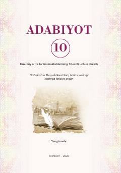

1A10-sinf o'quvchilari uchun mo'ljallangan rasmiy adabiyot darsligi.
Mazkur darslik umumiy o'rta ta'lim maktablarining 10-sinfi uchun mo'ljallangan bo'lib, badiiy tahlil metodlari, o'zbek va jahon adabiyoti namunalari tahlilini o'z ichiga oladi. Kitob o'quvchilarning adabiy-estetik dunyoqarashini kengaytirishga xizmat qiladi.